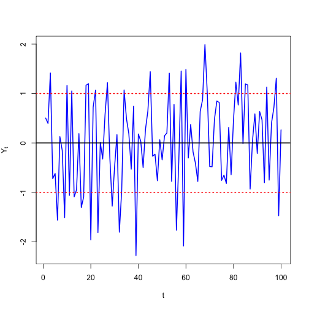
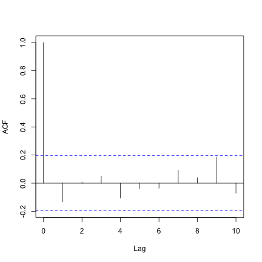
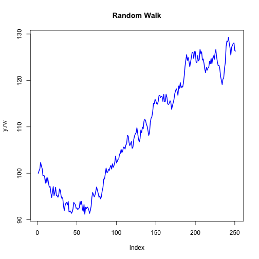
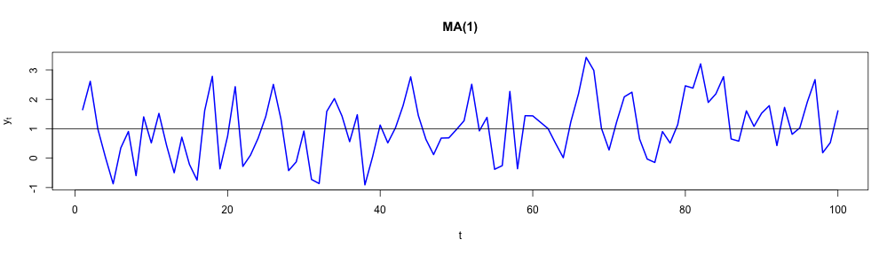
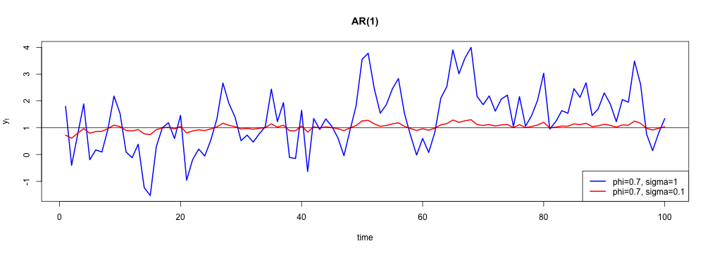

- index.Rmd: código fonte da apresentação
Simulando séries temporais lineares
download de recursos
ruído branco Gaussiano
Um ruído branco é uma sequência de variáveis aleatórias independentes e identicamente distribuídas (iid) com média e variância finitas. Se a sequência tem distribuição normal com média zero e variância \(\sigma^2\) temos uma série de ruídos brancos Gaussianos.
\[ Y_t \sim iid\,N(0, \sigma^2)\,\, \forall\,\, t \]
\[ \mathbb{E}[Y_tY_s] = 0 \,\, \forall\,\, t \neq s \]
y = rnorm(100)
## [1] 0.5049 0.3959 1.4155 -0.7223 -0.6184 -1.5626
ruído branco Gaussiano
 
random walk process
Uma série temporal \({y_t}\) é um random walk se satisfaz
\[y_t = y_{t-1} + \varepsilon_t\] \[ \varepsilon_t \sim iid\, N(0, \sigma^2)\,\, \forall \,\, t \] \[ \mathrm{E}\left[ \varepsilon_t\varepsilon_s \right] = 0,\,\, \forall \,\, t \neq s \]
onde \(p_0\) é o valor inicial da série.
e = c(100, rnorm(250)) # p_0 = 100
y.rw = cumsum(e)
## [1] 100.0 100.5 100.9 102.3 101.6 101.0
random walk process


simulando MA(1)
Uma série temporal MA(1) satisfaz
\[y_t = \mu + \varepsilon_t - \theta\varepsilon_{t-1},\,\, \varepsilon_t \sim iid\, N(0,\sigma^2)\]
# theta = 0.5, sigma = 1
ma1.model = list(ma = 0.5)
mu = 1
ma1.sim.1 = mu + arima.sim(model = ma1.model, n = 100)

simulando MA(1)
# theta = 0.5, sigma = 0.1
ma1.model = list(ma = 0.5)
mu = 1
ma1.sim.2 = mu + arima.sim(model = ma1.model, n = 100, innov = rnorm(n = 100,
mean = 0, sd = 0.1))

MA(1) autocorrelation function
ma1.acf = ARMAacf(ar = 0, ma = 0.5, lag.max = 10)

simulando AR(1)
Uma série temporal AR(1) satisfaz
\[y_t = \mu + \phi y_{t-1} + \varepsilon_t,\,\, \varepsilon_t \sim iid\,N(0,\sigma^2)\]
# phi = 0.7, sigma = 1
ar1.model = list(ar = 0.7)
mu = 1
ar1.sim.1 = mu + arima.sim(model = ar1.model, n = 100, innov = rnorm(n = 100,
mean = 0, sd = 1))

simulando AR(1)
# phi = 0.7, sigma = 0.1
ar1.model = list(ar = 0.7)
mu = 1
ar1.sim.2 = mu + arima.sim(model = ar1.model, n = 100, innov = rnorm(n = 100,
mean = 0, sd = 0.1))

AR(1) autocorrelation function
ar1.acf = ARMAacf(ar = 0.7, ma = 0, lag.max = 10)

Simulando séries temporais lineares